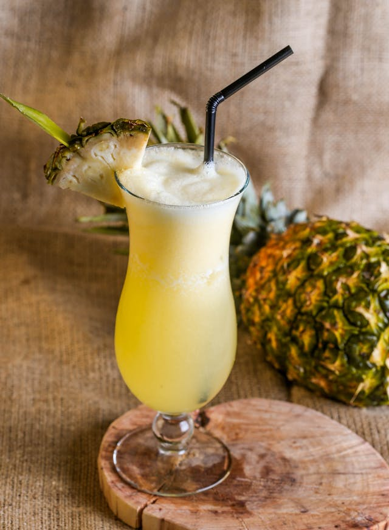
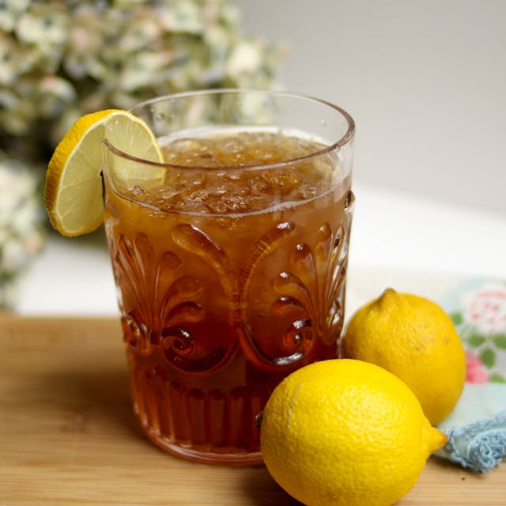

Classes of Food
Fats
Fats are a type of lipid, consisting of carbon, hydrogen, and oxygen atoms. They are composed of fatty acids and glycerol.
Fats are the most concentrated source of energy in the diet, providing more than twice the energy per gram compared to carbohydrates and proteins.
- Avocado
- Olive oil
- Nuts
- Seeds
- Dairy products


Water
- Coffee
- Coffee is a beverage brewed from roasted coffee beans. Darkly colored, bitter, and slightly acidic, coffee has a stimulating effect on humans, primarily due to its caffeine content. It has the highest sales in the world market for hot drinks.
- Pineapple Juice
- Pineapple juice is a juice made from pressing the natural liquid out from the pulp of the pineapple (a fruit from a tropical plant). Numerous pineapple varieties may be used to manufacture commercial pineapple juice, the most common of which are Smooth Cayenne, Red Spanish, Queen, and Abacaxi. In manufacturing, pineapple juice is typically canned.It is used as a single or mixed juice beverage, and for smoothies, cocktails, culinary flavor, and as a meat tenderizer.Pineapple juice is a main ingredient in the piña colada and the tepache.
- Ice Tea
- Iced tea (or ice tea)[1] is a form of cold tea. Though it is usually served in a glass with ice, it can refer to any tea that has been chilled or cooled. It may be sweetened with sugar or syrup. Iced tea is also a popular packaged drink that can be mixed with flavored syrup such as lemon, raspberry, lime, passion fruit, peach, orange, strawberry, and cherry.[


Read up the full article here